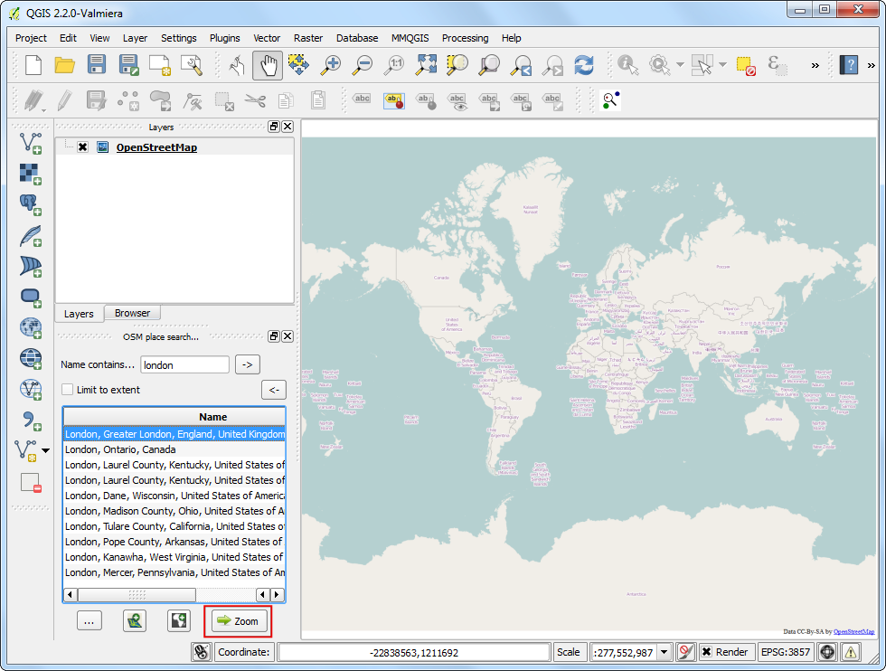
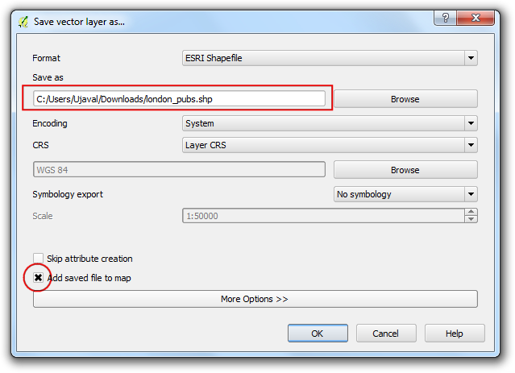

OpenStreetMap Verisinde Arama Yapma ve Veriyi İndirme
CBS işleri için yüksek kalitede veri elzemdir. Ücretsiz ve açık kullanım için lisanslanmış en iyi verilerden biri OpenStreetMap(OSM) verisidir. OSM veritabanı cadde-sokak ve bina poligonları gibi veriler içermektedir. OSM verisine CBS formatları ile erişim QGIS ile entegredir. Bu kılavuzda OSM verisi içinde arama yapma ve veriyi QGIS’e indirme anlatılmaktadır.
Görev Özeti
OSM veritabanında Londra için arama yapmak, şehrin bir bölümünü seçerek pub konumlarını shp formatında kaydetmek
İşlem Adımları
Bu işlem için 2 eklenti kullanacağız. OSM Place Search* ve OpenLayers eklentilerinin yüklü olduğundan emin olun. Eklentileri yüklemek için Using Plugins dokümanından faydalanabilirsiniz.

OSM Place Search eklentisi Panel olarak yüklenir. QGIS içince OSM place search... başlıklı yeni bir panel göreceksiniz.

OpenLayers eklentisi ise Eklentiler menüsü altında hizmete hazırdır. Bu eklenti ile çeşitli kaynaklardan altlık haritalara erişebilirsiniz. seçerek OpenStreetMap altlık haritasını ekleyelim.

Dünya haritasının QGIS’e yüklendiğini göreceksiniz.
Not
Eğer hiçbir veri göremiyorsanız online olduğunuzdan emin olun çünkü haritalar internetten gelmektedir. Pan aracı ile haritayı kaydırabilirsiniz. Bunu yaptığınızda haritanın tekrar yüklendiğini göreceksiniz.

Şimdi Londra için arama yapabiliriz. OSM Yer Arama panelinde Select kutusuna London yazıyoruz. Sonuçların üzerinde gezinip harita üzerinde ilgili yerin işaretlendiğini görebilirsiniz. İlk sonucu seçerek Zoom butonuna basın.

Altlık haritanın kayarak Londra etrafına odaklandığını göreceksiniz. Zoom aracı ile ilgilendiğiniz alanı seçebilirsiniz. Bu kılavuzda aşağıda görüen şehir merkezine yakınlaşıyoruz.

Artık haritada görünen veriyi bilgisayarımıza indirebiliriz. Bunun için şu yolu izliyoruz: .

Download OpenStreetMap data penceresinde Extent olarak From map canvas seçiyoruz. Kaydedeceğimiz klasörü seçip dosya adını london.osm olarak belirliyoruz.

İndirdiğimiz .osm uzantılı dosya OSM XML formatında bir metin dosyası. Öncelikli işimiz bunu QGIS’in daha iyi işleyebileceği bir formata dönüştürmek. yolunu takip ediyoruz.
Not
Artık OSM Yer Arama özelliğine ihtiyacımız yok, ana pencereden kaldırmak için Kapat butonuna tıklıyoruz. Eğer tekrar kullanmak isterseniz (Windows) veya (Linux) adımlarını izleyebilirsiniz.

İndirdiğimiz london.osm dosyasını Input XML file olarak seçiyoruz. Output SpatiaLite DB file olarak london.osm.db yazıyoruz. Create connection (SpatiaLite) after import seçeneğinin işaretli olduğundan emin oluyoruz.

Son olarak QGIS’in okuyup işleyebileceği SpatialLite geometrik katmanlarını yaratmamız gerekiyor. Bunu yapmak için izlenecek yol: .

london.osm.db dosyası OSM içindeki tüm obje türlerini barındırmakta (nokta, çizgi ve poligon). CBS katmanlarının genellikle tek bir türden oluşması istenir, o yüzden birini seçmemiz gerekiyor. İlgilendiğimiz konu pub’ların nokta olarak konumları olduğundan Export type olarak Point (nodes) seçiyoruz. Yol ağını seçmek isteseydik Polylines (open ways) seçebilirdik. Output layer name olarak london_points giriyoruz. CBS verileri iki bölümden oluşur: lokasyon ve öznitelikler. Pub’lerın yalnızca konumu değil **ad**larıyla da ilgilendiğimiz için bu veriyi de dışa aktarmamız gerekiyor. Exported tags kısmından Load from DB seçiyoruz. Bu sayede london.osm.db dosyasındaki tüm öznitelik bilgileri de aktarılmış olacak. name ve amenity etiketlerini işaretliyoruz. Hangi özniteliğin ne işe yaradığını görmek için OSM Tags sayfasını kontrol edebilirsiniz. Load into canvas when finished seçeneğini işaretleyip click OK butonunu tıklıyoruz.

london_points adındaki yeni katman QGIS’e yüklenmiş olmalı. Dikkat ederseniz OSM veritabanındaki kaydettiğimiz alana ait ** TÜM ** noktalar katmanda yer alıyor. Biz yalnızca pub’lar ile ilgilendiğimiz için bunları seçecek bir sorgu yazmamız gerekiyor. london_points katmanına sağ tıklayıp Open Attribute Table seçin.

Dikkat ederseniz bazı objelerin amenity değeri pubs olarak listelenmekte. Select features using an expression butonuna tıklayın.

“amenity” = ‘pub’ ifadesini girin ve Select butonuna tıklayın.

Arkada QGIS penceresinde bazı noktaların sarı olarak işaretlendiğini göreceksiniz. Bu işaretlenen noktalar sorgumuzun sonucunda seçilen noktalardır. london_points katmanını sağ tıklayıp Save Selection As... seçin.

Save vector layer as... penceresinde dosya adını london_pubs.shp olarak girin. Diğer seçenekleri değiştirmeden bırakabilirsiniz. Yine Add saved file to map seçeneğinin işaretli olduğunu kontrol ederen OK butonuna basıyoruz.

london_pubs katmanının QGIS’ eklendiğini göreceksiniz. london_points katmanını artık kapatabilirsiniz.

Artık pub’ların shapefile olarak oluşturulması tamamlandı. Herhangi bir noktanın özniteliklerini görmek için Identify aracı ile istediğiniz noktaya tıklayabilirsiniz.